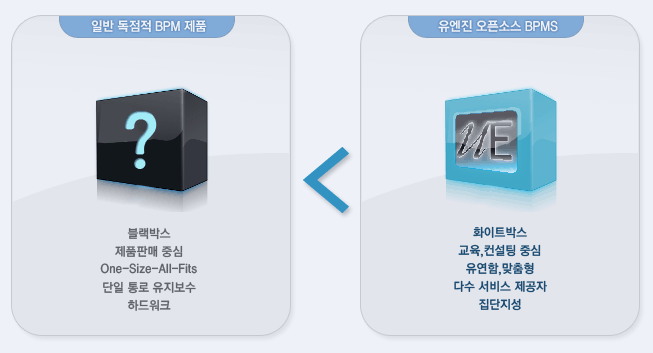

<link rel="import" href="../../bower_components/polymer/polymer.html">

<script src="../../bower_components/webcomponentsjs/webcomponents-lite.min.js"></script>
<link rel="import" href="../../bower_components/iron-demo-helpers/demo-pages-shared-styles.html">

    


<dom-module id="uengine-about-opensource">
  <template>


  <style is="custom-style" include="demo-pages-shared-styles">
      #container {
        max-width: 600px;
      }

      paper-tabs, paper-toolbar {
        background-color: var(--google-green-800);
        color: #fff;
      }
    </style>
    <div style="text-align: left">
      
    </div>
    <br>
    <br>
    <div style="text-align: center">
      
    </div>


  
   </template>

  <script>
    Polymer({
      
 
      properties:{
       is: 'uengine-about-opensource',
        page: String
      }
    });
  </script>


</dom-module>
